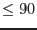
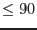

| Parameter | Mand | Type | Default | Constraints |
| datastyle | no | string | set | user|set |
By use of this parameter, the user can specify the style of input and output desired. If datastyle=`user', the task looks for position information for a single source in the parameters ra and dec. If datastyle=`set', the task looks for the source positions stored in columns RA and DEC of a FITS table specified by the parameter intab.
|
| intab | no | table | inset.ds:INPUT | |
Name of the FITS table that contains the sky positions. Active only if datastyle=`set'.
|
| witherrorcol | no | boolean | no | |
Active only if datastyle=`set'. If witherrorcol=`yes', esky2det
looks for position uncertainties in decimal degrees in columns RA_ERR and DEC_ERR of intab. If neither of these columns is found, esky2det
looks for a common value in arcseconds stored in a column named RADEC_ERR. This last is to cater for the format of source lists output by emldetect.
|
| withouttab | no | boolean | no | |
Active only if datastyle=`set'. If withouttab=`yes', the task looks for outtab and writes the output to this file. Otherwise the output is written to columns in the intab.
|
| outtab | no | table | outset.ds:OUTPUT | |
Name of the FITS table that is to contain the camera-centric positions. Active only if datastyle=`set' and withouttab=`yes'.
|
| ra | yes | angle | 0.0 |  ra ra |
The right ascension (in any of the allowed angle-parameter formats) of the source. Active only if datastyle=`user'.
|
| dec | yes | angle | 0.0 |  dec dec |
The declination (in any of the allowed angle-parameter formats) of the source. Active only if datastyle=`user'.
|
| witherrorradius | no | boolean | no | |
Active only if datastyle=`user'. If witherrorradius=`yes', esky2det
reads a single angular uncertainty from parameter errorradius.
|
| errorradius | yes | angle | 0.0 | errorradius |
The radius of the uncertainty circle around the source position. Active only if datastyle=`user' and witherrorradius=yes.
|
| withheader | no | boolean | yes | |
Active only if datastyle=`user'. If withheader=`yes', the task prints some lines of header information before printing the source position line; if `no', this is omitted. The `no' setting is convenient for those wishing to run esky2det
from a script.
|
| outunit | no | string | raw | det|raw |
If outunit=`det', the positions are calculated in the DETX/Y system. Otherwise, the RAWX/Y and CCDNR of the position are calculated.
|
| mosccdnode | no | string | primary | primary|redundant |
This allows the user to specify the readout node for positions on the MOS instruments. It is enabled only if outunit=`raw', and ignored for PN.
|
| calinfostyle | no | string | set | set|user |
If `set' the task obtains information about the instrument and spacecraft pointing from calinfoset; if `user', this information is obtained from parameters instrument, datetime, scattra, scattdec and scattapos.
|
| calinfoset | yes | dataset | calinfo.ds | |
The name of the dataset in which information about the instrument and spacecraft pointing etc is stored in keywords.
|
| instrument | yes | string | EMOS1 | EMOS1|EMOS2|EPN |
Active only if calinfostyle=`user'. The name of the relevant XMM instrument.
|
| datetime | yes | string | 0000-00-00T00:00:00 | |
If calinfostyle=`user', the date and time are expected via this string parameter.
|
| scattra | yes | angle | 0.0 | attra |
The right ascenscion (in any of the allowed angle-parameter formats) of the spacecraft pointing. Active only if calinfostyle=`user'.
|
| scattdec | yes | angle | 0.0 | attdec |
The declination (in any of the allowed angle-parameter formats) of the spacecraft pointing. Active only if calinfostyle=`user'.
|
| scattapos | yes | angle | 0.0 | attapos |
The position angle (in any of the allowed angle-parameter formats) of the spacecraft pointing. Active only if calinfostyle=`user'.
|
| checkfov | no | boolean | yes | |
If set true then the task does not return detector coordinates for positions which don't lie on a CCD or within the field-of-view. Set to false to get a DET value for these cases.
|
| Parameter | Mand | Type | Default | Constraints |